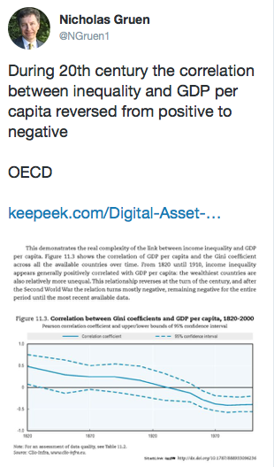

Economists love tradeoffs. Indeed, their basic model of the world breaks down where such tradeoffs don't occur. Lucky for them since the world really is full of tradeoffs. If you want more carrots, you'll have to do with fewer of something else. Here they're substitutes. But, to use an ugly word which first became faddish in the 1980s, where there are synergies between things that you're after, you're in a wonderful world.
Economists love arguing that there is a tradeoff between equity (or perhaps equality of income) and efficiency. Of course there are such tradeoffs. If you tax work at high enough rates, especially of more productive people who are likely to be earning more, if you buy yourself sufficient equity between their own take-home pay and those who are less productive, you may also buy yourself less work from your most productive people - a classic equity/efficiency tradeoff.
But of course the world is full of synergies between efficiency and equity.
One of my faves is the Toyota production system in which power (and income) is more decentralised than in 'Taylorist' production where the managers (representing the owners) and their process engineers and designers call the shots. And guess what? Decentralising authority and autonomy at least according to a regime as disciplined as the Toyota production system is much more productively efficient as well as being 'fairer', more equitable and those within the system tend to be happier.
Often when one sees such things they bring a kind of immediate delight - something that Adam Smith reflected on "the beauty which the appearance of Utility bestows upon all the productions of art, and of the extensive influence of this species of Beauty".
Anyway, I thought of this when I came upon this article (pdf)- from which the table above is taken. The rise of women in the workforce is an excellent example of the promotion of equity and efficiency in the workforce. Likewise early childhood intervention programs where they are successful. They save those at risk of leading horrible lives and get them to lead much less horrible lives - to the benefit of the people immediately involved and all those around them - including their governments, who are more likely to be receiving more revenue and paying out less in doles and/or prison capacity. I expect lots of basic health programs and population based health measures generate the magic double of gains in efficiency and equity.
Anyway, I wanted to ask Troppodillians for their favourite examples of policies that promote both equity and efficiency.

Admitting skilled migrants - efficiency and promotes job opportunities for low paid unskilled without damaging their wages - impacts on well - paid...
As a general theorem any efficiency change can be accompanied by a lump sum transfer which leaves no one worse off.
But in most cases you DO need the transfer - the enclosure movement improved efficiency but, as Marx argued, the then landless peasants coped it in the neck......the Samuelson - Weitzman theorem.
True for most micreconomic reforms - congestion pricing in all but an extreme case, often cutting tariffs on labor intensive manufactures.....
Universal education and the rule of law are examples that come to mind of activities that have increased the size of the cake and improved its distribution.
The point about trade-offs in economics is only partly that you cannot have more of one thing without less of something else (which is still true of any of the examples given, at least if you consider the right time-frame. There is invariably someone who loses). It is also that even if you have a genuine case for public goods that overcome some barrier to private parties realising a supposed synergy gain, then you will at the margin still be in the tradeoff game.
I agree with your last point. On the earlier one - that there are tradeoffs when considered within some time frame - can you be more specific and illustrate with my examples.
Harry, it sounds like the first example - admitting high skilled workers is a Pareto improvement, and I'm all for it, but I was talking about things that actively promote both equity and efficiency. I would have thought that, admitting high skilled workers will probably make poorer workers better off, but not relative to the high skilled workers, so it could well raise, rather than lower inequality. (To repeat, that doesn't make me against it, but it doesn't seem to fit the category I've defined.)
The carbon tax (or fixed price emissions trading scheme if you prefer) arguably is such a case. If it helps to fix the negative exernality from carbon emissions, that's additional efficiency. And if net effects of the income tax cuts, social security increases and incidence of the carbon tax are relatively better for the poor than the rich, that's additional equity. (I don't think anyone has worked out the distributional effects, but I could be wrong).
In so far as skilled migration increases the supply of skilled labour it should put downward pressure on skilled wages. If having the skilled migration increases the employment prospects of unskilled workers they are better off. So equity improves.
It is an efficiency improvement because it corresponds to the relaxation of an implied quota. There are 'gains-from-trade' associated with it.
Thanks Harry, you've persuaded me.
I would have thought that many pigouvian taxes would match this. The carbon tax would be a high profile example.
What is the time limit? Do you include inter-generational equity and efficiency?
Some people don't have kids and this lose with education subsidies. Some operated outside the law (kings) and get constrained by them over time. The bosses who lost authority win Toyota certainly lost in th short run. Furthermore, in the short run, ther is always an investment that can be spent on something else.
If you consider freedom of conscience to be equity (and I do because it is the equity of everyone being able to make their own decision what to believe in) then in theory the most efficient and productive beliefs should consistently show themselves in the absence of anyone being able to violently suppress those beliefs.
This should over time allow people to reconsider their own position and move towards a better approach. I think that's the primary principle of all Libertarian gains.
Only if you consider it equitable for one group of people to decide what is best for another group of people... and that is somewhat of a questionable approach to equity. I guess there's a value assigned to self-determination, and different people rate this value higher or lower.
I think carbon taxes are regressive. Poorer people spend a higher proportion of their income on energy and fuel than wealthier ones. That's probably even more true today when the yuppies all live in the inner suburbs and catch the trains and trams to work.
That's a good point. I was more thinking of a global perspective where some of the largest costs of climate change will be felt by the world's poorest.
Harry and Nick, I agree with your analysis as far as it goes, but would just point out that depending on the country and your view of spillovers, skilled migration may reduce income equality at a global level. When an Ethiopian mining engineer arrives in Australia, Australia is probably better off but Ethiopia is probably worse off. This is a point which Saul Eslake has also made.
Ethiopa may be worse off (I think this is highly questionable - how much does Ethiopa make in remittances? How much does Ethiopa benefit from an educated and relatively wealthy diaspora compared to a subjugated and ill-educated domestic population?), but in any event I'm struggling to see how global income equality is less because a poor person earns more.
Actually, they are the beneficiaries of carbon taxes since most systems encourage us to export carbon-intensive jobs to them.
David it depends how you do the arithmetic. If you calculate income in the country of emigration inclusive of those who left and who are better off then international equality improves. If you calculate income in terms of the people left behind (who do not migrate) international inequality worsens because they have less gains from trade and the destination economy has more..
A carbon tax looks like another of the large group of policies which may be domestically regressive but globally progressive. Opening up trade in simply transformed manufactures may be another, depending on your view of several issues including how low-skill male labour reacts to various incentives. Is it progressive or regressive for a high income earner to donate to World Vision?
Another good story
Another reference.
Improving social mobility should improve both equity and output – as modelled here.
Note to file – a recent tweet
Another instance
Dear Nicholas Gruen,
Thanks for opening up this very interesting discussion. I am a young student but not an economist. I am actually also looking for examples demonstrating the synergies between equality and efficacity and more specifically how more equality can benefit efficacity.
1)About your discussion with Harry on skilled migration: I understand how more skilled migration can increase the employment prospects of unskilled workers but I do not understand how it is an efficiency improvement “corresponding to the relaxation of an impled quota”. Besided, how can it be an improvement if it puts pressure on skilled wages?
2) On the last study that you mentioned (K Kirkland) on how high economic inequality can have a negative effect on children's prosocial decision making: I can't see a direct relationship with efficacity. And more specifically, how reducing inequality could benefit efficacity in this case.
Could you enlighten me on these points?
Many thanks in advance and sorry for my lack of economic knowledge
Thanks for your questions Mathilde
1) Referring to "relaxation of a quota" Harry is talking about the efficiency gain of removing some arbitrary restriction on a system. A background assumption of most orthodox and much non-orthodox economics is that markets work fairly well to generate satisfaction (unless there are specific reasons to expect 'market failure' – in which case they don't necessarily). Now immigration restrictions constrain 'the market' (i.e. individual people) from working out what configuration of migration is best. So relaxing it presumptively generates benefits.
2) Pro-social behaviour is in most cases highly efficiency-enhancing as it enables people to cooperate and get on. If we needed police everywhere to make sure people treated each other decently, it would be expensive – and in fact that would just be the first-round effects. If people can't trust each other, social and economic arrangements break down. You might be thinking 'but cooperation is the opposite of competition', but the competition that helps the economy find efficient things to do is competition within rules which means that (paradoxically) even competition is an indirect form of cooperation – and in many economic circumstances the best arrangement.
It is likely good schools dilute environmental effects on overall intelligence scores, and Australia is doing very well on this. There is evidence for this from very early ages and not just the adolescents looked at in that study and the kids in the study you linked. It is why people should care about early childhood education and primary schools more. It is also why you need much more than a few philanthropists and a few programs trying to help the absolute bottom.
A much much bigger education program that did work was the No Child Left Behind program in the US. Bush signed that program into law with largely bipartisan support -- one wonders if that would happen now.
In many ways this tweet identifies the most powerful link between equality and efficiency I've ever run into. https://twitter.com/NGruen1/status/1578256663236206593
Another example. "Equality of opportunity" While education and prospects were once almost wholly tied to familial wealth, a system of competitive merit selection allows any capable, hard-working kid rise into the loftiest of professions. In doing so it exemplifies justice as equal opportunity for all, at the same time as efficiency as the society makes the best use of all the talent available. “No-one left behind”, means “everyone makes their best contribution” to their world.
Programs like this — providing they work — are massively efficiency and equity enhancing.